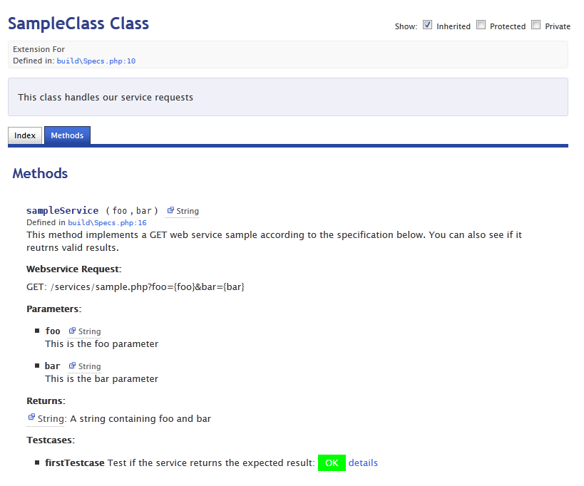

ResTest
... is a suggestion to develop well documented and test proven REST services.
... wants to be straight forward
... is just a proposal looking for feedback
ResTest commented code might look like this:
/**
* This is a simple demo of the ResTest philosophy
*
* @method sampleService This method implements the webservice sample
* @param {String} foo This is the foo parameter
* @param {String} bar This is the bar parameter
* @webservice {GET} /services/sample.php?foo={foo}&bar={bar} This is the request Pattern
* @return {String } A string containing with value 'foo and bar'
*
* @testcase SampleTestcase {
* arrange : {
* // Do anything to arrange the test
* },
* act : {
* // Do the webservice request
* request : {
* foo : 'foo',
* bar : 'bar'
* }
* },
* assert : {
* // Assert the result is as expected
* datatype : 'String',
* value : 'foo and bar',
* }
* } Test if the service returns the expected result
*/
And it might result in something like this:

The Aim of ResTest
ResTest aims at a pragmatic approach to develop well specified, documented and tested web services. In particular it targets theses aims:
- Keep specification, implementation, documentation and test cases in one place and always have them synchronized
- Keep things as simple as possible and use common standards whenever possible
- Keep things as simple as possible and use common standards whenever possible
The Idea
"Documentation includes specification, specification includes test cases"
What we document is the implementation of a specification. Therefore, our documentation
needs to meet the specification. If we can't meet the specs, we need to change the specs.
Or in other words, the specs are always part of the documentation. To prove the
implementation works as specified, a proper specification always needs appropriate test cases.
"These three things should always be synchronized, so why even separate them?"
For documentation we have beautiful quasi standards realized in many different dialects
(such as javadoc). Also there are concepts around for neutral readable test case descriptions
such as Gherkin. So for me it
would be an extreme benefit to keep all these things together
and have them always published with the latest release.
As I understand, these thoughts are part of agile development.
The Missing Part
It's not much I'm missing to realize this idea. Here it is:
1.) A description of the service and how to call it
@webservice name {type} http://request.org/pattern/{parameter}?optional={optional}
There is an established formalized way to describe REST services with {placeholder} description.
2.) A formalized test case description
@testcase name {formalized test case} Description of the test cases
A potential way of test case formalization could be the above sketched JSON format or maybe Gerkin (and if you know other, please let me know).
It will be a challenge to face the trade-off between readability and formalization.
Most of the ajax test cases I have met so far are arrange - act - assert
pattern cases. However, we might want to be open for more complex situations. Also, from my experience it is very probable that we
want to combine multiple requests to some kind of integration test (e.g. it could be part of the arrange part to run another
web service to prepare or collect data).
Another Example
See the yuidoc output of this example
/**
* A POST Example with JSON Content will be here
*/
Plans on Implementation
The above principles and concepts might be generic, but have to be implemented or plugged into the
real world. This means we need to tell our favorite doc generator to understand these tags and we
need to tell it how to deal with the test case. These things will always be implementations on your
development environment. However, it would be great for developers if we could agree on some general
principles, such as described above.
Since my company uses yuidoc for documentation (the new node.js based version), I will write a
plugin to YUIdoc which renders the additional two documentation tags. Also I will write a JavaScript
test runner, which allows us to run tests on build-time and during production (in my case tests will be
executed with Y.Test).
Here will be a link to the test-runner